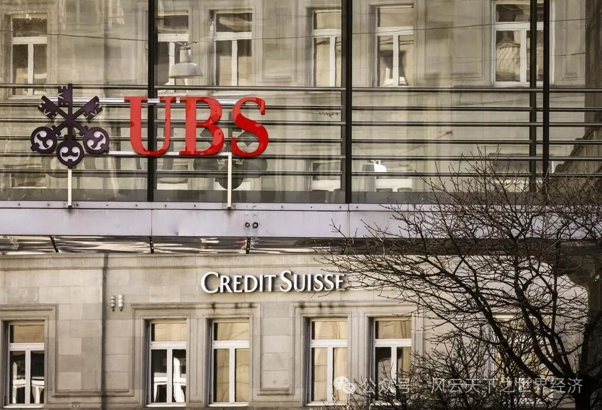

我们用Title/Date/Event/Insight/Voices/Observer来还原此时此刻的世界经济

被世界其他国家货币锚定的美元
- Title To follow or not to follow, that is the question.——被锚定的美元与加息的漩涡 - Date 3月15日—3月16日
- Event
美联储于当地时间3月15至16日举行了为期两天的议息会议。鲍威尔表示，美联储可能不得不将利率提高到超最近预期的更高水平，因为有关通胀、就业和支出的新数据显示，美国经济仍在过热。世界其他各国也纷纷跟随加息：欧洲央行在3月16日再次加息0.5个百分点。澳大利亚央行将其主利率上调至3.6%，这是连续第十次上调。日本央行也表示，需要再次加息。
- Insights
从2022年下半年起，“美元加息”成为了人们频频听到的经济热词。毫无疑问，关于美元这个经济世界顶流明星的任何风吹草动，都能卷起全球范围的一场波澜。
由于疫情期间的大放水和疫情后经济的反弹，美国的通货膨胀率居高不下，远超普遍认为的稳定水平2%。美国拿出了备受偏爱的政策武器：加息。虽然对减缓通胀的收效不甚显著，但美联储“屡败屡试”，让世界胆战心惊。
加息是通货膨胀的救命稻草吗？如果作答者是美国而不是以色列，问题要稍作更改。对于本国货币拥有超级货币地位的美国来说，加息从单薄的一根稻草变成了可以收割世界的锋利镰刀。
由于各国货币都锚定美元，一旦美元加息，各国就不得不跟随行动：如果不跟随加息，逐利的资本将从本国外流，去向利率回报更高的美国，本国货币贬值，本国资产可能会被美国收割；如果跟随加息，本国的融资成本将升高，企业生产和消费被抑制，不利于经济的发展活力。
To follow or not to follow, that is the question.世界陷入了一种两难的困境。加息掀起了巨大的漩涡，向内是更深的陷落，向外是逆水行舟难以挣脱。
- Voice
欧洲中央银行行长克里斯蒂娜•拉加德(Christine Lagarde)表示：“通胀是一个怪物，我们需要敲它的头。”
3月13日客户在硅谷银行总部外排队办理业务
- Title Big But Fall - Date 3月10日
- Event
硅谷银行（Silicon Valley Bank, SVB） 因资不抵债在48小时内倒闭，于3月10日被美国联邦存款保险公司（FDIC）接管。这是美国自2008年金融海啸以来最大的银行倒闭事件。
- Insights
总部位于加州的硅谷银行在1983年成立，倒闭前是美国第16大商业银行。截至2022年12月31日，该行拥有约2090亿美元资产，旗下存款规模达1754亿美元，是硅谷本地存款最多的银行。
这样一个庞然大物，轰然倒下，用时不到两天，直接原因是银行挤兑导致资不抵债。
3月8日，硅谷银行宣布筹集22.5亿美元资金，以弥补债券投资亏损。这触发市场信心危机，客户纷纷提取存款，在挤兑带来的踩踏事件中，SVB股价暴跌，最后一命呜呼。
而让硅谷银行出现巨大危机的根本原因，和美元加息有关。
硅谷银行，因为总部位于硅谷，主要客户是科技初创企业。受惠于2019-2021年新冠疫情期间的科技热潮，硅谷银行近年吸纳了数十亿存款，并将大部份资金投资于美国政府长期债券。彼时，市场利率极低，接近为零，投资的长期政府债券即使利率不高，仍然有利可图。然而当前美元持续加息，一方面科技企业融资成本变高，发展呈现颓势；一方面，高利率使得政府债券回报率下降，硅谷银行亏损严重。此消彼长之下，硅谷银行才会陷入危机，宣布筹款，最后发生挤兑。
硅谷银行的Big but fall，难免让我们将其和2008年的雷曼银行进行关联，担忧它是不是又一场金融危机的吹哨者。但美国当局表示不会考虑大规模纾困计划，将这场危机归为了小概率事件：硅谷银行的客户类型，投资结构都具有独特性，它的陷落，有自身的必然性，但可能是银行群体的偶然。
硅谷银行的投资结构单一性为世界各国银行规避系统性风险敲响了警钟。它是美元加息的牺牲品，但美元加息似乎并不会因为它的倒下而偃旗息鼓。
- Voice
诺贝尔经济学奖得主Paul Krugman认为：“硅谷银行只是一家‘闲聊及有气氛的银行( Schmoozing and Vibes Bank)’，和雷曼完全不同。这次事件可能影响创投生态系统，但仅限于相关行业，不会导致银行倒闭潮。”
美国财政部长Janet Yellen说：“在2008年金融危机期间，政府已经救了许多投资者和大型银行系统，实施了改革，这意味着我们不会再做一次。”

曾经的竞争对手瑞银集团（上）和瑞士信贷（下）
- Title 瑞银收购瑞信，昔日对手变今日掌门 - Date 3月19日
- Event
瑞士最大的银行瑞银集团在瑞士政府的斡旋下，以30亿瑞士法郎(32亿美元)的价格收购了陷入困境的竞争对手瑞士信贷银行，这比瑞士信贷的股票估值低了60%。
- Insights
濒临倒闭的瑞士信贷银行(Credit Suisse)将被其竞争对手瑞银集团(UBS)收购，这是为防止银行业灾难性崩溃进行的疯狂的最后一搏。
这场收购由政府牵头并努力达成。瑞银集团最开始给出了10亿瑞士法郎的“不可能低价”，对于接盘瑞信的态度并不积极。最终的收购价格30亿瑞士法郎，比市场股票估值低了60%，但瑞银预估并购牵涉的损失可能达到54亿美元。
面对这场危机动荡，瑞士政府最终还是秉承了“大而不能倒”的信念，一边提供流动性支持，一边示意瑞银收购瑞信，以此方式来维持金融稳定。
但我们很难说这场举世瞩目的收购里谁是赢家，它更像是一种“无可奈何”：合并两家银行是不得不采取的避险措施，但合并后瑞士过度依赖一家银行又何尝不是另一种冒险？
收购的全部事项预计于年底完成，昔日对手变今日掌门的故事还未到尾声。那些在收购中被强制清算的债权人，合并后可以预计到的大裁员是否会对金融与经济稳定发起新一轮的冲击？
- Voice
瑞士联邦主席Alain Berset在新闻发布会上说：“瑞信深陷危机可能对本国和国际金融稳定造成不可估量的后果，这项并购是眼下恢复金融市场信心的最佳方案。”
欧洲央行行长Christine Lagarde说：“瑞士方面的迅速行动对恢复有序市场、确保金融稳定有帮助。”
瑞士信贷集团董事会主席Axel Lehmann称：“该收购交易为一次具历史意义、悲伤而富挑战性的大事件。”
瑞银董事长Colm Kelleher 19日在面向行业分析人士的一场电话会议上说：“今天对瑞士而言是历史性的一天，坦白说也是我们不希望看到的一天……我要说清楚，并不是我们发起磋商，但我们相信这笔交易最终对瑞银股东还是有吸引力的。”